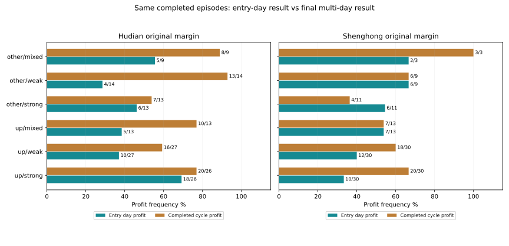

按环境切换策略：先区分日内胜率与跨日胜率
6类事前环境 · 冻结与季度更新两种检验 · 256组完整账户 · 不改默认
本轮结论：分环境减险有价值，持仓期限不能混用
按用户提出的方向，本轮先定义可当时识别的环境，再从此前数据决定保留基础仓位、沿用原反转策略或限制仓位。季度更新方案在沪电和胜宏三年中都降低了回撤；但完整持仓周期胜率没有同步提高，更早沪电融资回撤仍接近70%，尚不具备稳定高胜率的证据。
最重要的新发现：沪电“未满足上行趋势、09:45低于开盘价和分时均价”环境下，原融资策略的14个已完成持仓周期，建仓当日仅4次盈利，最终却有13次盈利，持仓中位数5天。不能因为日内表现弱，就直接否定跨日反转；也不能把13/14称作日内做T成功率。样本小、历史已见，92.86%不是未来概率。
环境定义：全部在09:45前可知
趋势轴：前日收盘高于60日均线，且前日120日均线高于20个交易日前，标记“满足上行趋势”；其余为“未满足”，后者包括震荡，不能直接等同于下行趋势。该条件复用已有研究。
早盘轴：只使用09:30至09:45三根已完成5分钟K线。09:45价格同时高于开盘价和累计成交均价为“双上方”；同时低于两者为“双下方”；其余为“混合”。成交均价＝前三根成交金额之和÷成交量之和。两轴组成6类，不使用当日未来最高、最低或收盘。
另把跳空分为低开至少1%、中间、高开至少1%；早15分钟量除以前20交易日同期平均量，1.2倍分为放量／普通。这两项只做并列诊断，没有在结果出来后追加到切换条件中。
实际持仓周期：同一环境，期限不同，结论可能相反
以下直接统计原账户的已完成持仓周期，按建仓当天09:45环境分组。建仓当日盈利与最终盈利使用完全相同的一组周期，账户收益已计费用及融资利息；期中可能经历其他环境，不能把最终结果全归因于入场状态。
| 股票／账户 | 入场环境 | 同组建仓日盈利 | 完整周期盈利 | 持仓中位天数 | 未结束周期／市值损益 |
|---|---|---|---|---|---|
| 沪电／原现金 | 未满足上行趋势／早盘混合 | 4/8=50.00% | 7/8=87.50% | 3 | 0 / 0元 |
| 沪电／原现金 | 未满足上行趋势／早盘双上方 | 7/16=43.75% | 10/16=62.50% | 3 | 0 / 0元 |
| 沪电／原现金 | 未满足上行趋势／早盘双下方 | 5/15=33.33% | 14/15=93.33% | 5 | 0 / 0元 |
| 沪电／原现金 | 满足上行趋势／早盘混合 | 5/12=41.67% | 9/12=75.00% | 3.5 | 0 / 0元 |
| 沪电／原现金 | 满足上行趋势／早盘双上方 | 19/29=65.52% | 18/29=62.07% | 2 | 0 / 0元 |
| 沪电／原现金 | 满足上行趋势／早盘双下方 | 13/29=44.83% | 18/29=62.07% | 6 | 1 / -192,318元 |
| 沪电／原融资默认 | 未满足上行趋势／早盘混合 | 5/9=55.56% | 8/9=88.89% | 3 | 0 / 0元 |
| 沪电／原融资默认 | 未满足上行趋势／早盘双上方 | 6/13=46.15% | 7/13=53.85% | 4 | 0 / 0元 |
| 沪电／原融资默认 | 未满足上行趋势／早盘双下方 | 4/14=28.57% | 13/14=92.86% | 5 | 0 / 0元 |
| 沪电／原融资默认 | 满足上行趋势／早盘混合 | 5/13=38.46% | 10/13=76.92% | 4 | 0 / 0元 |
| 沪电／原融资默认 | 满足上行趋势／早盘双上方 | 18/26=69.23% | 20/26=76.92% | 2.5 | 0 / 0元 |
| 沪电／原融资默认 | 满足上行趋势／早盘双下方 | 10/27=37.04% | 16/27=59.26% | 6 | 1 / -411,989元 |
| 胜宏／原现金 | 未满足上行趋势／早盘混合 | 4/5=80.00% | 4/5=80.00% | 2 | 0 / 0元 |
| 胜宏／原现金 | 未满足上行趋势／早盘双上方 | 7/12=58.33% | 4/12=33.33% | 2.5 | 0 / 0元 |
| 胜宏／原现金 | 未满足上行趋势／早盘双下方 | 6/9=66.67% | 6/9=66.67% | 6 | 1 / -220,283元 |
| 胜宏／原现金 | 满足上行趋势／早盘混合 | 6/12=50.00% | 9/12=75.00% | 3.5 | 0 / 0元 |
| 胜宏／原现金 | 满足上行趋势／早盘双上方 | 12/32=37.50% | 21/32=65.62% | 3 | 0 / 0元 |
| 胜宏／原现金 | 满足上行趋势／早盘双下方 | 11/28=39.29% | 17/28=60.71% | 5 | 0 / 0元 |
| 胜宏／原融资默认 | 未满足上行趋势／早盘混合 | 2/3=66.67% | 3/3=100.00% | 2 | 0 / 0元 |
| 胜宏／原融资默认 | 未满足上行趋势／早盘双上方 | 6/11=54.55% | 4/11=36.36% | 2 | 0 / 0元 |
| 胜宏／原融资默认 | 未满足上行趋势／早盘双下方 | 6/9=66.67% | 6/9=66.67% | 6 | 1 / -468,082元 |
| 胜宏／原融资默认 | 满足上行趋势／早盘混合 | 7/13=53.85% | 7/13=53.85% | 4 | 0 / 0元 |
| 胜宏／原融资默认 | 满足上行趋势／早盘双上方 | 10/30=33.33% | 20/30=66.67% | 3 | 0 / 0元 |
| 胜宏／原融资默认 | 满足上行趋势／早盘双下方 | 12/30=40.00% | 18/30=60.00% | 4.5 | 0 / 0元 |

只统计已结束周期不能忽略未结束亏损：上表单列，全部按市值纳入账户净值和回撤。其他环境的低比例也要保留，例如沪电原融资“满足上行趋势／早盘双下方”完整周期仅16/27盈利，另有一个未结束周期；没有只展示13/14的高胜率小组。
用于初筛的价格命中率：与实际交易分开
训练指标是09:45之后首根K线开盘至日收盘涨幅，扣除示意往返成本门槛后是否为正。门槛为双边佣金、双边过户费、卖出印花税及单边5基点滑点，按10万元订单估算，佣金高于最低5元。它没有模拟T+1库存、可成交量或实际成交价，只是价格代理指标，不是完整做T胜率。10基点账户压力测试仍使用原5基点训练映射，不重选规则。
真实T+1及成交限制在后面的完整账户回测执行。价格代理与实际跨日周期的期限、参与日期不同，本轮也正是在核验二者能否衔接。
| 沪电环境 | 2023-10至2024年训练命中 | 2025至2026年6月命中 | 2026年7月后命中 |
|---|---|---|---|
| 满足上行趋势／早盘双上方 | 27/63=42.86% | 47/96=48.96% | 4/13=30.77% |
| 满足上行趋势／早盘双下方 | 34/66=51.52% | 41/85=48.24% | 2/9=22.22% |
| 满足上行趋势／早盘混合 | 21/49=42.86% | 26/57=45.61% | 1/4=25.00% |
| 未满足上行趋势／早盘双上方 | 21/47=44.68% | 25/59=42.37% | 10/22=45.45% |
| 未满足上行趋势／早盘双下方 | 16/43=37.21% | 14/39=35.90% | 4/13=30.77% |
| 未满足上行趋势／早盘混合 | 17/34=50.00% | 13/23=56.52% | 4/5=80.00% |
| 股票／时间段 | 命中数／样本 | 命中率 | Wilson95%区间¹ | 平均示意扣费后涨幅 |
|---|---|---|---|---|
| 沪电／train | 16/43 | 37.21% | 24.38%～52.14% | -0.23% |
| 沪电／validation | 14/39 | 35.90% | 22.74%～51.58% | -0.21% |
| 沪电／julyOn | 4/13 | 30.77% | 12.68%～57.63% | -0.68% |
| 沪电／older | 81/227 | 35.68% | 29.74%～42.11% | -0.25% |
| 胜宏／train | 18/49 | 36.73% | 24.66%～50.73% | -0.50% |
| 胜宏／validation | 14/24 | 58.33% | 38.83%～75.53% | 0.66% |
| 胜宏／julyOn | 7/27 | 25.93% | 13.17%～44.68% | -0.90% |
| 胜宏／older | 88/225 | 39.11% | 32.97%～45.62% | -0.39% |
沪电该低命中环境在训练、后续段及更早历史均约36%～37%；但胜宏2025年至2026年6月达到14/24＝58.33%，说明同业也可能有不同反应。¹ Wilson区间仅展示有限样本的不确定性，未校正时间相关性和多重比较，不能视作严格未来概率保证。训练43天的区间仍覆盖50%。
高命中小组有没有延续？
| 股票 | 环境 | 下一季度开始 | 此前样本／命中率 | 下一季度命中／样本 | 下一季度平均示意扣费涨幅 |
|---|---|---|---|---|---|
| 沪电 | 未满足上行趋势／早盘混合 | 2024-04-01 | 34 / 61.76% | 0/0 / — | — |
| 沪电 | 未满足上行趋势／早盘混合 | 2024-07-01 | 31 / 61.29% | 3/8 / 37.50% | 0.10% |
| 胜宏 | 未满足上行趋势／早盘混合 | 2024-04-01 | 34 / 61.76% | 0/0 / — | — |
| 胜宏 | 未满足上行趋势／早盘混合 | 2024-07-01 | 31 / 61.29% | 3/5 / 60.00% | 2.26% |
训练期达到约61%的小组，在下一季度可能没有出现，或沪电只有3/8命中；胜宏3/5的样本同样太少。没有找到足以称为稳定80%日内胜率的环境，不能将全历史最高比例直接移作未来策略。
怎样把区分因子变成可检验的策略切换
每个环境至少30天样本；价格命中率≥60%且平均示意扣费涨幅为正，使用“参与模式”：在已披露利润增长为正时，目标至少50%，新增部分不融资。命中率≤40%且均值为负，使用“防守模式”：原目标上限压至50%，不新增融资。其余或样本不足，沿用原反转目标。原目标0%在防守模式仍为0%，不会凭空建仓。
F冻结方案：仅用沪电2023-10-09至2024-12-31训练，2025年起固定不变，之前沿用原方案；同一映射直接用于胜宏，不按胜宏结果重新拟合。实际仅“未满足上行趋势／早盘双下方”被分到防守，其他五组沿用原方案。
W季度更新方案：每季度仅用沪电此前252个完整交易日重新统计，映射冻结一个季度，同样转用于胜宏。2021年4月前不足252天，沿用原方案。23个季度×6组中，105组沿用原策略、31组防守、2组参与。所有参数先登记，没有挑选历史最优季度。
策略仍在原09:45／10:00执行；09:45条件允许该时点减少目标，但没有自动提前原本10:00的调仓。假设分钟收盘数据可及时获得，真实延迟仍是未验证项。
三年完整账户：2023-10-09至2026-10-08
| 股票／方案 | 净收益 | 最大回撤¹ | 平均仓位 | 完整周期胜率 | 盈利日／全部日 | 最差5%日均收益 |
|---|---|---|---|---|---|---|
| 沪电／全仓持有 | 423.59% | 48.19% | 98.80% | 无已结束周期 | 374/727=51.44% | -7.28% |
| 沪电／原现金 | 537.26% | 19.18% | 44.16% | 76/109=69.72% | 278/727=38.24% | -4.32% |
| 沪电／原融资默认 | 1226.51% | 25.20% | 59.37% | 74/102=72.55% | 281/727=38.65% | -6.05% |
| 沪电／固定50% | 156.82% | 27.08% | 49.87% | 无已结束周期 | 375/727=51.58% | -3.72% |
| 沪电／冻结分环境·现金 | 436.72% | 17.06% | 42.87% | 77/108=71.30% | 278/727=38.24% | -4.14% |
| 沪电／冻结分环境·融资 | 885.57% | 23.81% | 57.12% | 73/101=72.28% | 276/727=37.96% | -5.72% |
| 沪电／季度更新分环境·现金 | 423.82% | 17.35% | 41.11% | 76/110=69.09% | 277/727=38.10% | -4.16% |
| 沪电／季度更新分环境·融资 | 946.20% | 21.60% | 53.15% | 77/108=71.30% | 274/727=37.69% | -5.78% |
| 胜宏／全仓持有 | 818.57% | 55.12% | 99.55% | 无已结束周期 | 340/727=46.77% | -8.62% |
| 胜宏／原现金 | 191.85% | 34.50% | 38.15% | 61/98=62.24% | 226/727=31.09% | -5.63% |
| 胜宏／原融资默认 | 300.94% | 48.39% | 53.04% | 58/96=60.42% | 225/727=30.95% | -8.37% |
| 胜宏／固定50% | 264.75% | 32.39% | 50.02% | 无已结束周期 | 340/727=46.77% | -4.30% |
| 胜宏／冻结分环境·现金 | 113.70% | 34.50% | 36.19% | 61/97=62.89% | 224/727=30.81% | -5.33% |
| 胜宏／冻结分环境·融资 | 105.10% | 48.39% | 49.00% | 58/98=59.18% | 225/727=30.95% | -7.82% |
| 胜宏／季度更新分环境·现金 | 160.03% | 27.45% | 36.34% | 62/99=62.63% | 230/727=31.64% | -5.42% |
| 胜宏／季度更新分环境·融资 | 183.37% | 39.47% | 49.05% | 57/96=59.38% | 231/727=31.77% | -8.05% |
¹ 最大回撤按5分钟采样及官方日收盘。各账户100万元独立起步。季度更新融资：沪电回撤25.20%→21.60%，收益1226.51%→946.20%；胜宏回撤48.39%→39.47%，收益300.94%→183.37%。平均仓位也下降，因此目前只能称分环境减险候选，不能全部归因为更精准的择时。
按当前偏好，收益下降不是自动淘汰理由；但沪电融资完整周期胜率72.55%→71.30%，胜宏60.42%→59.38%，不能声称同时提升了胜率。简单固定50%仍一并列出，保留仓位降低本身的风险对照。
冻结后的时间段与7月后表现
以下区间独立起步：later为2025-01-01至2026-06-30，julyOn为2026-07-01至数据末日。虽然严格按时间顺序训练，但这些行情此前已被研究过，不是新的盲测。
| 股票 | 区间 | 方案 | 净收益 | 最大回撤 | 完整周期胜率 |
|---|---|---|---|---|---|
| 沪电 | later | 原现金 | 220.00% | 19.96% | 70.18% |
| 沪电 | later | 原融资默认 | 482.72% | 25.93% | 69.09% |
| 沪电 | later | 冻结分环境·现金 | 199.10% | 17.84% | 71.43% |
| 沪电 | later | 冻结分环境·融资 | 414.79% | 22.15% | 71.43% |
| 沪电 | later | 季度更新分环境·现金 | 191.45% | 17.84% | 71.43% |
| 沪电 | later | 季度更新分环境·融资 | 387.05% | 22.15% | 71.43% |
| 沪电 | julyOn | 原现金 | 27.92% | 15.26% | 66.67% |
| 沪电 | julyOn | 原融资默认 | 37.17% | 22.90% | 66.67% |
| 沪电 | julyOn | 冻结分环境·现金 | 16.41% | 16.55% | 66.67% |
| 沪电 | julyOn | 冻结分环境·融资 | 12.47% | 25.50% | 66.67% |
| 沪电 | julyOn | 季度更新分环境·现金 | 27.92% | 15.26% | 66.67% |
| 沪电 | julyOn | 季度更新分环境·融资 | 37.17% | 22.90% | 66.67% |
| 胜宏 | later | 原现金 | 216.26% | 30.63% | 65.57% |
| 胜宏 | later | 原融资默认 | 376.11% | 43.75% | 65.00% |
| 胜宏 | later | 冻结分环境·现金 | 148.49% | 27.42% | 65.57% |
| 胜宏 | later | 冻结分环境·融资 | 194.38% | 39.45% | 62.30% |
| 胜宏 | later | 季度更新分环境·现金 | 156.90% | 27.42% | 65.57% |
| 胜宏 | later | 季度更新分环境·融资 | 214.40% | 39.45% | 63.93% |
| 胜宏 | julyOn | 原现金 | -14.25% | 25.85% | 36.36% |
| 胜宏 | julyOn | 原融资默认 | -22.20% | 36.81% | 36.36% |
| 胜宏 | julyOn | 冻结分环境·现金 | -21.75% | 26.72% | 36.36% |
| 胜宏 | julyOn | 冻结分环境·融资 | -34.49% | 38.54% | 36.36% |
| 胜宏 | julyOn | 季度更新分环境·现金 | -14.25% | 25.85% | 36.36% |
| 胜宏 | julyOn | 季度更新分环境·融资 | -22.20% | 36.81% | 36.36% |
冻结规则在沪电7月后反而放大回撤；季度更新映射在2026年7月、10月回到原方案，因此重新起步的julyOn结果与原策略一致，不能宣称当时通过新因子提前躲过大跌。
固定年度、更早历史与滑点
| 方案 | 单边滑点 | 年度回撤小于原方案 |
|---|---|---|
| 沪电／冻结分环境·现金 | 5基点 | 1/3 |
| 沪电／冻结分环境·现金 | 10基点 | 1/3 |
| 沪电／冻结分环境·融资 | 5基点 | 1/3 |
| 沪电／冻结分环境·融资 | 10基点 | 1/3 |
| 沪电／季度更新分环境·现金 | 5基点 | 2/3 |
| 沪电／季度更新分环境·现金 | 10基点 | 2/3 |
| 沪电／季度更新分环境·融资 | 5基点 | 3/3 |
| 沪电／季度更新分环境·融资 | 10基点 | 3/3 |
| 胜宏／冻结分环境·现金 | 5基点 | 0/3 |
| 胜宏／冻结分环境·现金 | 10基点 | 1/3 |
| 胜宏／冻结分环境·融资 | 5基点 | 1/3 |
| 胜宏／冻结分环境·融资 | 10基点 | 1/3 |
| 胜宏／季度更新分环境·现金 | 5基点 | 3/3 |
| 胜宏／季度更新分环境·现金 | 10基点 | 3/3 |
| 胜宏／季度更新分环境·融资 | 5基点 | 3/3 |
| 胜宏／季度更新分环境·融资 | 10基点 | 2/3 |
沪电季度更新融资5基点下3/3年度回撤较小，但其中两个年度差异不足0.05个百分点；这是数值改善，不能等同于每年都明显减险。年度起点为每年10月9日，每段独立100万元。
| 股票／方案 | 净收益 | 最大回撤¹ | 平均仓位 | 完整周期胜率 | 盈利日／全部日 | 最差5%日均收益 |
|---|---|---|---|---|---|---|
| 沪电／原现金 | -20.02% | 59.42% | 36.15% | 38/63=60.32% | 258/910=28.35% | -3.57% |
| 沪电／原融资默认 | -23.97% | 72.81% | 49.43% | 37/57=64.91% | 269/910=29.56% | -5.09% |
| 沪电／季度更新分环境·现金 | -19.82% | 58.54% | 34.37% | 36/61=59.02% | 333/910=36.59% | -3.47% |
| 沪电／季度更新分环境·融资 | -19.16% | 69.89% | 45.16% | 38/60=63.33% | 307/910=33.74% | -4.83% |
| 胜宏／原现金 | -4.50% | 47.10% | 42.11% | 32/48=66.67% | 341/910=37.47% | -4.05% |
| 胜宏／原融资默认 | -6.67% | 60.81% | 55.03% | 24/38=63.16% | 342/910=37.58% | -5.69% |
| 胜宏／季度更新分环境·现金 | 7.95% | 39.99% | 38.64% | 30/47=63.83% | 337/910=37.03% | -3.64% |
| 胜宏／季度更新分环境·融资 | 20.91% | 49.44% | 46.61% | 24/34=70.59% | 343/910=37.69% | -4.89% |
更早沪电融资回撤仍为69.89%、收益−19.16%，是明显未解决的风险。冻结方案在更早区间没有启用，故不拿其与原方案相同的结果冒充通过检验。
| 股票／方案 | 净收益 | 最大回撤¹ | 平均仓位 | 完整周期胜率 | 盈利日／全部日 | 最差5%日均收益 |
|---|---|---|---|---|---|---|
| 沪电／原现金 | 460.52% | 19.75% | 44.19% | 73/108=67.59% | 288/727=39.61% | -4.34% |
| 沪电／原融资默认 | 1081.02% | 25.95% | 59.74% | 68/100=68.00% | 278/727=38.24% | -6.08% |
| 沪电／冻结分环境·现金 | 367.65% | 17.61% | 42.86% | 75/110=68.18% | 274/727=37.69% | -4.16% |
| 沪电／冻结分环境·融资 | 763.26% | 23.56% | 57.27% | 72/105=68.57% | 270/727=37.14% | -5.75% |
| 沪电／季度更新分环境·现金 | 366.41% | 17.79% | 41.14% | 73/109=66.97% | 280/727=38.51% | -4.19% |
| 沪电／季度更新分环境·融资 | 800.16% | 22.34% | 53.31% | 72/105=68.57% | 283/727=38.93% | -5.83% |
| 胜宏／原现金 | 165.21% | 34.82% | 38.09% | 61/98=62.24% | 223/727=30.67% | -5.65% |
| 胜宏／原融资默认 | 246.28% | 48.77% | 53.06% | 57/97=58.76% | 225/727=30.95% | -8.40% |
| 胜宏／冻结分环境·现金 | 92.48% | 34.82% | 36.13% | 60/98=61.22% | 221/727=30.40% | -5.35% |
| 胜宏／冻结分环境·融资 | 79.57% | 48.77% | 49.04% | 56/96=58.33% | 222/727=30.54% | -7.85% |
| 胜宏／季度更新分环境·现金 | 137.73% | 27.80% | 36.32% | 62/99=62.63% | 228/727=31.36% | -5.44% |
| 胜宏／季度更新分环境·融资 | 145.30% | 39.56% | 49.06% | 58/98=59.18% | 227/727=31.22% | -8.08% |
10基点时，季度更新融资的沪电回撤22.34%、胜宏39.56%，仍低于原方案；胜率变化不统一。原现金保留全仓收益并降回撤25%、财富1.20倍仍作历史对照，本批不宣称达标。
连续账户领先、未平仓与尾部
| 方案 | 截至6月30日连续收益 | 7月起连续收益 | 累计领先全仓 | 最长落后 | 63日滚动领先 | 未结束周期市值损益 |
|---|---|---|---|---|---|---|
| 沪电／原现金 | 381.11% | 32.46% | 23.93% | 276日 | 47.97% | -192,318元 |
| 沪电／原融资默认 | 779.53% | 50.82% | 61.90% | 235日 | 53.98% | -411,989元 |
| 沪电／冻结分环境·现金 | 352.64% | 18.57% | 17.74% | 280日 | 47.37% | -274,729元 |
| 沪电／冻结分环境·融资 | 694.17% | 24.10% | 55.43% | 235日 | 54.29% | -550,404元 |
| 沪电／季度更新分环境·现金 | 297.55% | 31.76% | 17.06% | 323日 | 42.11% | -184,122元 |
| 沪电／季度更新分环境·融资 | 574.36% | 55.14% | 33.29% | 277日 | 49.77% | -297,796元 |
| 胜宏／原现金 | 239.95% | -14.15% | 13.07% | 630日 | 32.48% | -220,283元 |
| 胜宏／原融资默认 | 402.78% | -20.26% | 13.48% | 569日 | 38.65% | -468,082元 |
| 胜宏／冻结分环境·现金 | 168.29% | -20.35% | 13.07% | 630日 | 29.77% | -137,487元 |
| 胜宏／冻结分环境·融资 | 211.18% | -34.09% | 13.48% | 569日 | 31.73% | -189,528元 |
| 胜宏／季度更新分环境·现金 | 202.14% | -13.94% | 13.07% | 630日 | 30.53% | -195,811元 |
| 胜宏／季度更新分环境·融资 | 262.82% | -21.90% | 13.48% | 569日 | 32.63% | -342,143元 |
上表7月前后承接持仓，复利相乘；与上一表分段独立起步口径不同。所有未平仓已按市值计入账户，不靠延后止损制造完整周期高胜率。完整256组明细另列非平盘日盈利比例、费用利息、周期盈亏比、季度连续结果及63日重叠窗口表现。
核验与后续研究重点
完成256组完整账户回测；384项基准指标复现；9190笔账本、5588笔买入额度核验；独立复算6692项训练与日期分配，16组持仓周期损益和4组实际周期分层汇总与原账户一致。
佣金万1、最低5元、日期对应印花税与过户费、T+1、整手、前根5分钟量1%及单笔30万股上限、涨跌停、融资年息6%保持原模型。借款买入后不超过净资产50%，持有期间被动超仓沿用用户规则。策略分红税20%、长期全仓0%的简化假设保留。
数据截至2026-10-08；10月9日分钟极值与日线差异未解决，未纳入已核验回测。今日休市，没有新增冻结后行情。历史分钟质量、财报修订版本与融资资格限制未解决。反复使用同一历史研究有选择偏差；相关方法风险可参考原作者论文The Probability of Backtest Overfitting。本批没有计算PBO，也不能给出策略“不是运气”的概率。
下一步应把目标拆成日内机会与跨日反转两套结果标签，并仅用训练截止日前已完成的持仓周期估计条件表现；跨越训练截止日的周期不能提前使用最终盈亏。高胜率小组还要检验最大中途亏损、退出时间和盈亏比，再决定仓位。此次实际周期分层是诊断，未据此反向改选本轮映射。
默认保持不变。下载全部分组、训练映射、信号、逐笔账本和复现脚本 · 上轮：MA20退出条件